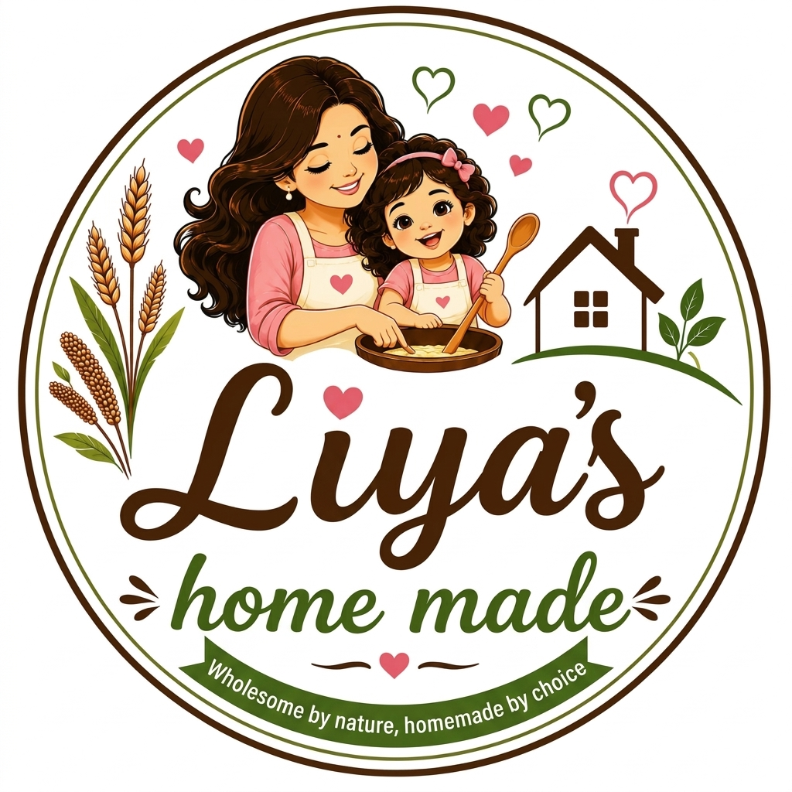

Traditional Health Benefits
Every grain we roast and grind holds specific traditional benefits. Here's a quick guide to what each of our homemade mixes is known for.

Every grain we roast and grind holds specific traditional benefits. Here's a quick guide to what each of our homemade mixes is known for.
Most commercial health mixes sit on warehouse shelves for months, packed with preservatives. Here is why choosing fresh, stone-ground homemade mixes is the best decision for your family.
We add absolutely zero shelf-life extenders, artificial colors, anti-caking agents, or synthetic flavors. It is as pure as if you roasted and ground it in your own kitchen.
Mass-production factories use high-speed, high-heat milling which burns away natural oils and vital vitamins. We slow-roast and stone-grind to keep the core nutrients and natural aroma intact.
Every single batch of millet, grain, and nut is hand-sorted, thoroughly washed, and sun-dried in a clean environment. We make fresh batches weekly, ensuring the pack delivered to you is fresh.
| Feature | Factory / Store-Bought Mixes | Liya's Homemade |
|---|---|---|
| Preservatives & Additives | Contains chemical extenders, artificial flavors, and stabilizers to sit on shelves. | ❌ 100% Preservative Free. Only natural grains and nuts. |
| Nutrient Retention | High-heat commercial mills strip out healthy fats, natural oils, and vitamins. | ⚙️ Traditional dry-roasting & stone-ground keeps nutrients alive. |
| Freshness | Manufactured months ago in giant quantities, losing natural aroma and flavor. | 🥣 Prepared weekly in small, hygienic home batches. |
| Quality of Grains | Often bulk-purchased lower grade grains padded with cheap flour fillers. | 🌾 100% premium whole grains, seeds, and nuts selected by hand. |
| Hygienic Cleaning | Machine-sifted only; grains are rarely washed or sun-dried individually. | 🧼 Meticulously hand-cleaned, washed, and sun-dried. |